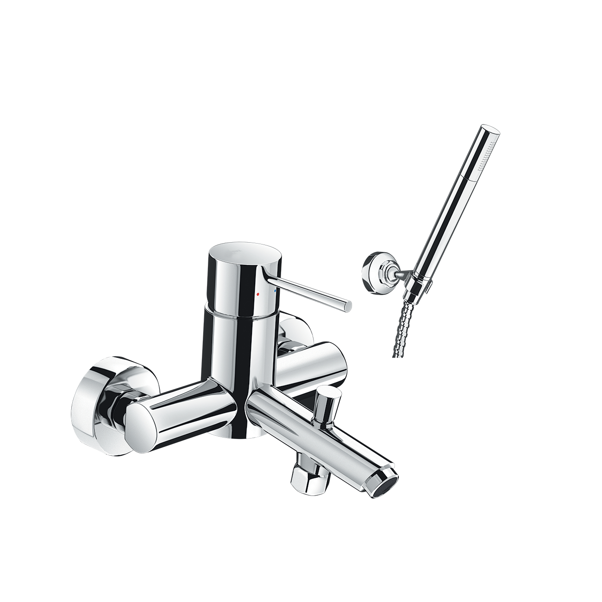
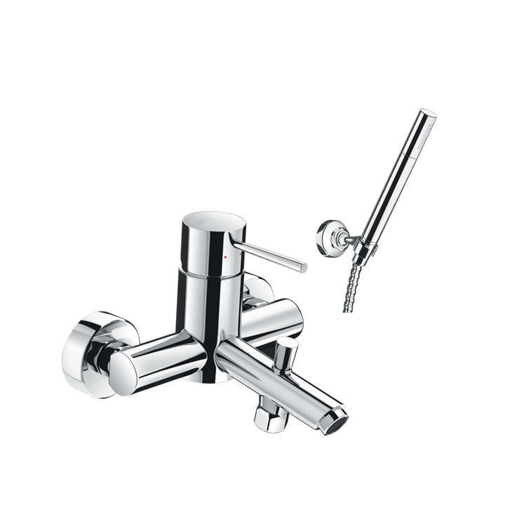
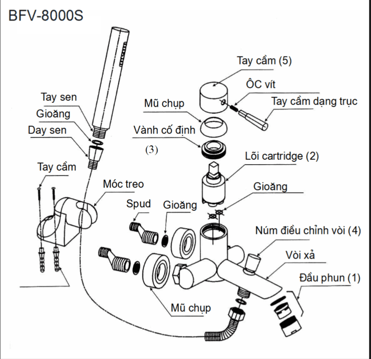

Sen vòi đơn BFV-8000S đến từ thương hiệu thiết bị vệ sinh INAX mang đến sự tiện nghi, bền bỉ và vẻ đẹp hiện đại cho mọi không gian phòng tắm. Với kiểu dáng trang nhã và tối giản, mẫu vòi sen tắm này không chỉ tối ưu hóa trải nghiệm sử dụng mà còn tạo nên tổng thể hài hòa, tinh tế cho ngôi nhà của bạn.Thiết kế sen vòi đơn BFV-8000SThiết kế tinh tế, hiện đại, dễ dàng hòa hợp với nhiều phong cách nội thất và có thể kết hợp linh hoạt với nhiều loại tay sen khác nhau.Tay gạt sen vòi đơn BFV-8000S được thiết kế đặc biệt giúp trải nghiệm điều chỉnh lượng nước và nhiệt độ trở nên nhẹ nhàng, trơn tru và chính xác hơn.Sản phẩm sử dụng đầu răng tiêu chuẩn Ø21, hoàn toàn phù hợp với các thông số kỹ thuật lắp đặt phổ biến tại Việt Nam.Công nghệ đầu vòi và tay sen mạnh mẽSen vòi đơn BFV-8000S đi kèm tay sen xi mạ Crom/Nikel sáng bóng với áp lực phun nước mạnh mẽ, mang lại cảm giác sảng khoái tối đa khi sử dụng.Đầu vòi tích hợp lưới lọc giúp loại bỏ cặn bẩn. Thiết kế hình tổ ong giúp đưa oxy vào dòng nước, tạo ra dòng nước mềm mại nhưng vẫn giữ được áp lực mạnh.Van lõi bằng gốm sứ Ceramic siêu mịn có khả năng chống mài mòn cao, giúp kiểm soát dòng chảy chính xác và ngăn chặn rò rỉ nước hiệu quả.Chất liệu bền bỉ và an toàn sức khỏeVòi sen BFV-8000S được đúc từ đồng thau nguyên khối, không chứa các kim loại nặng gây hại, đảm bảo an toàn tuyệt đối cho sức khỏe người dùng. Bề mặt được bảo vệ bởi 2 lớp Niken dày cứng chắc và 1 lớp Crom sáng bóng. Kết cấu này giúp vòi chống ăn mòn, không bị hoen ố hay gỉ sét bởi các tạp chất trong nước, giữ vẻ đẹp sáng bóng lâu dài.Dịch vụ hậu mãi chuyên nghiệpĐể khẳng định về độ bền, INAX cam kết bảo hành sản phẩm trong 10 năm trên toàn quốc. Ngoài ra, thương hiệu còn sở hữu dịch vụ bảo hành tận tình, xử lý nhanh chóng trong vòng 24 giờ để đảm bảo trải nghiệm tốt nhất cho khách hàng.Video giới thiệu sen vòi INAXBản vẽ sen vòi đơn BFV-8000SChi tiết hướng dẫn lắp đặt và sử dụng.Thông số kỹ thuậtChất liệuĐồng thau mạ Crom/NikelLoạiVòi sen tắm nóng lạnhKích thước-Thiết kếĐúc nguyên khối, van điều khiển CeramicThương hiệuINAXTính năng- Đầu vòi tổ ong tạo bọt, lọc cặn - Tay sen mạ sáng bóng, áp lực mạnh - Thiết kế ít chì, an toàn sức khỏeÁp lực nước0.05 MPa - 0.75 MPaKhác- Hotline tư vấn và bảo hành: 18006633
Sen vòi đơn BFV-8000S
Vòi chậu thương hiệu INAX.
Đã cập nhật danh sách yêu thích.
DANH MỤC: Vòi chậu
MÃ SẢN PHẨM: BFV-8000S
DEPTH: mm
HEIGHT: mm
WIDTH: mm
Sen vòi đơn BFV-8000S đến từ thương hiệu thiết bị vệ sinh INAX mang đến sự tiện nghi, bền bỉ và vẻ đẹp hiện đại cho mọi không gian phòng tắm. Với kiểu dáng trang nhã và tối giản, mẫu vòi sen tắm này không chỉ tối ưu hóa trải nghiệm sử dụng mà còn tạo nên tổng thể hài hòa, tinh tế cho ngôi nhà của bạn.Thiết kế sen vòi đơn BFV-8000SThiết kế tinh tế, hiện đại, dễ dàng hòa hợp với nhiều phong cách nội thất và có thể kết hợp linh hoạt với nhiều loại tay sen khác nhau.Tay gạt sen vòi đơn BFV-8000S được thiết kế đặc biệt giúp trải nghiệm điều chỉnh lượng nước và nhiệt độ trở nên nhẹ nhàng, trơn tru và chính xác hơn.Sản phẩm sử dụng đầu răng tiêu chuẩn Ø21, hoàn toàn phù hợp với các thông số kỹ thuật lắp đặt phổ biến tại Việt Nam.Công nghệ đầu vòi và tay sen mạnh mẽSen vòi đơn BFV-8000S đi kèm tay sen xi mạ Crom/Nikel sáng bóng với áp lực phun nước mạnh mẽ, mang lại cảm giác sảng khoái tối đa khi sử dụng.Đầu vòi tích hợp lưới lọc giúp loại bỏ cặn bẩn. Thiết kế hình tổ ong giúp đưa oxy vào dòng nước, tạo ra dòng nước mềm mại nhưng vẫn giữ được áp lực mạnh.Van lõi bằng gốm sứ Ceramic siêu mịn có khả năng chống mài mòn cao, giúp kiểm soát dòng chảy chính xác và ngăn chặn rò rỉ nước hiệu quả.Chất liệu bền bỉ và an toàn sức khỏeVòi sen BFV-8000S được đúc từ đồng thau nguyên khối, không chứa các kim loại nặng gây hại, đảm bảo an toàn tuyệt đối cho sức khỏe người dùng. Bề mặt được bảo vệ bởi 2 lớp Niken dày cứng chắc và 1 lớp Crom sáng bóng. Kết cấu này giúp vòi chống ăn mòn, không bị hoen ố hay gỉ sét bởi các tạp chất trong nước, giữ vẻ đẹp sáng bóng lâu dài.Dịch vụ hậu mãi chuyên nghiệpĐể khẳng định về độ bền, INAX cam kết bảo hành sản phẩm trong 10 năm trên toàn quốc. Ngoài ra, thương hiệu còn sở hữu dịch vụ bảo hành tận tình, xử lý nhanh chóng trong vòng 24 giờ để đảm bảo trải nghiệm tốt nhất cho khách hàng.Video giới thiệu sen vòi INAXBản vẽ sen vòi đơn BFV-8000SChi tiết hướng dẫn lắp đặt và sử dụng.Thông số kỹ thuậtChất liệuĐồng thau mạ Crom/NikelLoạiVòi sen tắm nóng lạnhKích thước-Thiết kếĐúc nguyên khối, van điều khiển CeramicThương hiệuINAXTính năng- Đầu vòi tổ ong tạo bọt, lọc cặn - Tay sen mạ sáng bóng, áp lực mạnh - Thiết kế ít chì, an toàn sức khỏeÁp lực nước0.05 MPa - 0.75 MPaKhác- Hotline tư vấn và bảo hành: 18006633
DANH MỤC: Vòi chậu
MÃ SẢN PHẨM: BFV-8000S
DEPTH: mm
HEIGHT: mm
WIDTH: mm